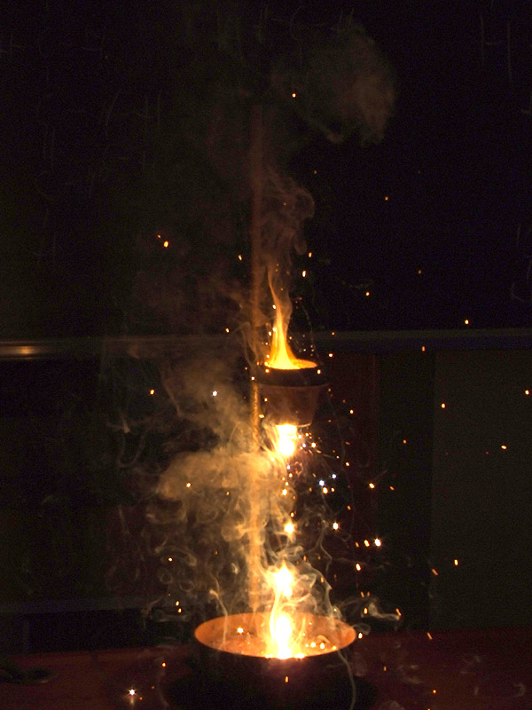

Sobre a série
Breaking Bad
Uma série de televisão produzida pelo roteirista e diretor Vince Gilligan entre 2008 e 2013, conta a história de Walter White, um professor de química que, após descobrir um câncer terminal, vira fabricante e vendedor de metanfetamina para garantir o futuro da sua família.
Escolhemos a obra pelo seu destaque e relevância, principalmente no assunto de química.
Termita
Uma mistura inorgânica composta por Alumínio em Pó (2Al) e Óxido de Ferro III (Fe₂O₃), que quando exposta a imensas quantidades de calor sofre uma reação química altamente exotérmica onde o alumínio é oxidado, formando óxido de alumínio, e o ferro do óxido de ferro III é reduzido formando ferro líquido, pois a reação libera tanta energia que o ferro funde. O calor liberado pela reação é tanto que a temperatura pode ultrapassar os 3500°C.

Vídeo que mostra o composto sendo usado na série. No episódio 7 da primeira temporada, os protagonistas usam o composto para destruir uma fechadura, colocando-o em cima dela e colocando fogo no composto com um maçarico, desencadeando a reação, com o objetivo de arrombar o lugar e roubar elementos químicos. No mundo real, a reação termita é usada em algumas áreas: Originalmente foi utilizada para consertar soldagens locais (como eixos de locomotivas) sem ter que desmontar as peças envolvidas. Ainda no âmbito de locomotivas, usa-se também para cortar e soldar rapidamente trilhos ferroviários, sem equipamentos pesados e caros. Já foi usada também no âmbito militar, onde granadas de termita eram utilizadas para destruir rapidamente equipamentos para que não sejam capturados por forças inimigas.
Teste seus conhecimentos
Qual a composição química da termita?
Em qual episódio da série a termita foi usada?
A que temperatura a reação química da termita pode chegar?